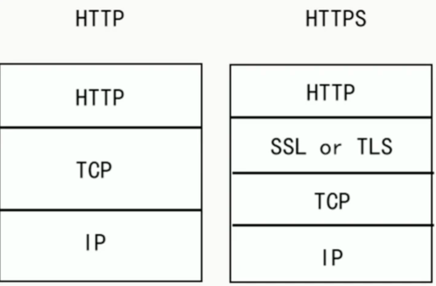

计算机网络
1、DNS解析过程
- 浏览器先检查自身缓存中有没有被解析过的这个域名对应的IP地址，如果有，解析结束。
- 如果浏览器中没有，浏览器会检查操作系统中有没有对应的已解析过的结果，而操作系统也有一个域名解析过程。在window下是一个hosts的文件。
- 到现在还没有命中，则向本地域名服务器请求解析域名。
- 如果本地DNS服务器本地区域文件与缓存解析都失效，则根据本地DNS服务器的设置，采用递归或者迭代查询，直至解析完成。
2、HTTP和HTTPS的区别，HTTPS握手的过程
端口 ：HTTP的URL由“http://”起始且默认使用端口80，而HTTPS的URL由“https://”起始且默认使用端口443。
安全性和资源消耗： HTTP协议运行在TCP之上，所有传输的内容都是明文，客户端和服务器端都无法验证对方的身份。HTTPS是运行在SSL/TLS之上的HTTP协议，SSL/TLS 运行在TCP之上。所有传输的内容都经过加密，加密采用对称加密，但对称加密的密钥用服务器方的证书进行了非对称加密。所以说，HTTP 安全性没有 HTTPS高，但是HTTPS 比HTTP耗费更多服务器资源。
- 对称加密：密钥只有一个，加密解密为同一个密码，且加解密速度快，典型的对称加密算法有DES、AES等；
- 非对称加密：密钥成对出现（且根据公钥无法推知私钥，根据私钥也无法推知公钥），加密解密使用不同密钥（公钥加密需要私钥解密，私钥加密需要公钥解密），相对对称加密速度较慢，典型的非对称加密算法有RSA、DSA等。 密
对称加密算法（私钥加密） 有AES、DES、3DES、TDEA、Blowfish、RC4、RC5、IDEA等。加密使用的密钥和解密使用的密钥是同一个密钥。由于加密算法是公开的，若要保证安全性，密钥不能对外公开。通常用来加密消息体。
3、TCP三次握手和四次挥手
三次握手
- 发送端首先发送一个带SYN（synchronize）标志的数据包给接收方【第一次的seq序列号是随机产生的，这样是为了网络安全，如果不是随机产生初始序列号，黑客将会以很容易的方式获取到你与其他主机之间的初始化序列号，并且伪造序列号进行攻击】 。
- 接收端收到后，回传一个带有SYN/ACK（acknowledgement）标志的数据包以示传达确认信息【SYN 是为了告诉发送端，发送方到接收方的通道没问题；ACK 用来验证接收方到发送方的通道没问题】 。
- 最后，发送端再回传一个带ACK标志的数据包，代表握手结束若在握手某个过程中某个阶段莫名中断，TCP协议会再次以相同的顺序发送相同的数据包。
四次挥手
- 主动断开方——发送一个 FIN，用来关闭主动断开方到被动断开方的数据传送 。
- 被动断开方——收到这个 FIN，它发回一 个 ACK，确认序号为收到的序号加1 。和 SYN 一样，一个 FIN 将占用一个序号 。
- 被动点开方——关闭与主动断开方的连接，发送一个FIN给主动断开方。
- 主动断开方——发回 ACK 报文确认，并将确认序号设置为收到序号加1。
4、TCP和UDP的区别，TCP怎么保证可靠
TCP和UDP的区别
- TCP面向连接的，可靠的数据传输服务；UDP面向无连接的，尽最大努力的数据传输服务，不保证数据传输的可靠性
- TCP面向字节流，UDP面向报文
- 应用进程交给 UDP 多长的报文， UDP 就照样发送，一次发送一个报文
- TCP 在发送时采取的方式完全不同：TCP 根据对方给出的窗口值和当前网络拥塞的程度来决定一个报文段应该包含多少个字节。如果报文太长，TCP会将其拆分再发送，如果报文太短，TCP会等待积累足够多的字节后再构成报文段发送出去
- TCP数据传输慢，UDP数据传输快
- TCP有拥塞控制，UDP没有拥塞控制，因此网络出现拥塞不会使源主机的发送速率降低（对实时应用很有效，如直播，实时视频会议等）
- TCP 只能是一对一的通信（TCP连接的端点是套接字socket），而 UDP 支持一对一、一对多、多对一和多对多的通信
- TCP 的首部开销大，有 20 个字节，比 UDP 的 8 个字节的首部要长。
- TCP提供可靠全双功的通信服务。UDP是半双功，只能单向传播。
TCP主要提供了检验和、序列号/确认应答、超时重传、滑动窗口、拥塞控制和 流量控制等方法实现了可靠性传输。
5、IP路由器寻址过程
6、HTTPS加密的方式，加密的究竟是什么
7、对称加密与非对称加密的区别？
什么是对称加密？
简单说就是有一个密钥，它可以加密一段信息，也可以对加密后的信息进行解密，和我们日常生活中用的钥匙作用差不多。
什么是非对称加密？
简单说就是有两把密钥，通常一把叫做公钥、一把叫私钥，用公钥加密的内容必须用私钥才能解开，同样，私钥加密的内容只有公钥能解开。
8、具体证书是怎么获取的？密钥如何分发？
https证书获取途径有两种：自己签发和由受信任的CA机构签发。
- 自己给自己签发而来的证书也叫自签名ssl证书，这种类型的证书可以随意签发，不受任何约束和监督，也不受各大浏览器的信任，基本没什么安全性可言，所以https证书获取不建议使用这种。
- 而由受信任的CA机构签发的https证书，才是用户们正确的选择。这种CA机构签发证书需要经过一系列的审核，而且是有有效期的，一般不超过2年，能兼容市面上大部分的浏览器，也就是受各大浏览器的信任，安全性有保障。目前比较受欢迎的几大国际品牌有Symantec、Geotrust、Comodo、Thawte以及RapidSSL等。想要获取靠谱的https证书可以从他们当中选择一款。
密钥交换
- 某网站拥有用于非对称加密的公钥A、私钥A’。
- 浏览器向网站服务器请求，服务器把公钥A明文给传输浏览器。
- 浏览器随机生成一个用于对称加密的密钥X，用公钥A加密后传给服务器。
- 服务器拿到后用私钥A’解密得到密钥X。
- 这样双方就都拥有密钥X了，且别人无法知道它。之后双方所有数据都通过密钥X加密解密即可。
9、通信过程中安全性如何保证
10、reactor是什么?跟proactor的区别?
Reactor
要求主线程，只负责监听文件描述上是否有事件发生，有的话就立即将该事件通知工作线程。除此之外，主线程不做任何其他实质性的工作。读写数据，接受新的连接，以及处理客户请求均在工作线程中完成。
Proactor
将所有I/O操作都交给主线程和内核来处理，工作线程仅负责业务逻辑。
11、IO多路复用解决了什么问题
一个服务器进程和一个客户端进程通信,服务器端read(sockfd1,bud,bufsize)，此时客户端进程没有发送数据，那么read(阻塞调用)将阻塞，直到客户端调用write(sockfd,but,size)发来数据，在一个客户和服务器通信时这没什么问题。
当多个客户与服务器通信时当多个客户与服务器通信时,若服务器阻塞于其中一个客户sockfd1，当另一个客户的数据到达套接字sockfd2时，服务器不能处理，仍然阻塞在read(sockfd1,...)上。
IO多路复用：
同时监听多个客户连接，socket1、socket2...当其中有一个发来消息就从select阻塞中返回，然后调用read读取，再回到select循环，这样就不会阻塞在其中一个上而不能处理其他客户消息。
12、select，poll，epoll
select
在一段时间内，监听用户感兴趣的文件描述符上的可读、可写和异常等事件，成功时返回就绪文件描述符的总数。
poll
和select类似，只是描述fd集合的方式不同，poll使用pollfd结构而不是select的fd_set结构。没有最大连接数的限制。
epoll
使用一组函数来完成任务，而不是单个函数，epoll把用户关心的文件描述符上的事件放在内核的一个事件表里，无须像select和poll每次调用都要重复传入文件描述符集或事件集。
13、有限状态机
~~14、线程调度~~
15、https的SSL建连过程会导致效率下降要怎么优化
16、https整个握手交互的过程总共花了多少rtt
17、TSL握手过程

SSL 和 TLS 协议可以为通信双方提供识别和认证通道，从而保证通信的机密性和数据完整性。TLS 协议是从Netscape SSL 3.0协议演变而来的，不过这两种协议并不兼容，SSL 已经逐渐被 TLS 取代，所以下文就以 TLS 指代安全层。
TLS 握手是启动 HTTPS 通信的过程，类似于 TCP 建立连接时的三次握手。 在 TLS 握手的过程中，通信双方交换消息以相互验证，相互确认，并确立它们所要使用的加密算法以及会话密钥 (用于对称加密的密钥)。可以说，TLS 握手是 HTTPS 通信的基础部分。
SSL / TLS 握手详细过程
- "client hello"消息：客户端通过发送"client hello"消息向服务器发起握手请求，该消息包含了客户端所支持的 TLS 版本和密码组合以供服务器进行选择，还有一个"client random"随机字符串。
- "server hello"消息：服务器发送"server hello"消息对客户端进行回应，该消息包含了数字证书，服务器选择的密码组合和"server random"随机字符串。
- 验证：客户端对服务器发来的证书进行验证，确保对方的合法身份，验证过程可以细化为以下几个步骤：
- 检查数字签名
- 验证证书链 (这个概念下面会进行说明)
- 检查证书的有效期
- 检查证书的撤回状态 (撤回代表证书已失效)
- "premaster secret"字符串：客户端向服务器发送另一个随机字符串"premaster secret (预主密钥)"，这个字符串是经过服务器的公钥加密过的，只有对应的私钥才能解密。
- 使用私钥：服务器使用私钥解密"premaster secret"。
- 生成共享密钥：客户端和服务器均使用 client random，server random 和 premaster secret，并通过相同的算法生成相同的共享密钥 KEY。
- 客户端就绪：客户端发送经过共享密钥 KEY加密过的"finished"信号。
- 服务器就绪：服务器发送经过共享密钥 KEY加密过的"finished"信号。
- 达成安全通信：握手完成，双方使用对称加密进行安全通信。
18、https还有什么安全问题
DNS劫持，简单的说黑客为了绕过HTTPS，采用了SSL层剥离的技术，黑客阻止用户和使用HTTPS请求的网站之间建立SSL连接，使用户和代理服务器（攻击者所控制的服务器）之间使用了未加密的HTTP通信。
19、https怎么保证证书可靠性
20、假设客户端和服务器通过TCP通信，这时客户端突然断电，服务器是如何关闭这个连接的？
定时器+超时重试机制
TCP 设有一个保活计时器。服务器每收到一次客户端的数据，都会重新复位这个计时器，时间通常是设置为 2 小时。若 2 小时还没有收到客户端的任何数据，服务器就开始重试：每隔 75 秒发送一个探测报文段，若一连发送 10 个探测报文后客户端依然没有回应，那么服务器就认为连接已经断开了。
21、浏览器输入URL到显示网页，发生了什么？
-
浏览器要将URL解析为IP地址，解析域名就要用到DNS协议，首先主机会查询DNS的缓存，如果没有就给本地DNS发送查询请求。DNS查询分为两种方式，一种是递归查询，一种是迭代查询。如果是迭代查询，本地的DNS服务器，向根域名服务器发送查询请求，根域名服务器告知该域名的一级域名服务器，然后本地服务器给该一级域名服务器发送查询请求，然后依次类推直到查询到该域名的IP地址。DNS服务器是基于UDP的，因此会用到UDP协议。
-
得到IP地址后，浏览器就要与服务器建立一个http连接。因此要用到http协议，http协议报文格式上面已经提到。http生成一个get请求报文，将该报文传给TCP层处理，所以还会用到TCP协议。如果采用https还会使用https协议先对http数据进行加密。TCP层如果有需要先将HTTP数据包分片，分片依据路径MTU和MSS。TCP的数据包然后会发送给IP层，用到IP协议。IP层通过路由选路，一跳一跳发送到目的地址。当然在一个网段内的寻址是通过以太网协议实现(也可以是其他物理层协议，比如PPP，SLIP)，以太网协议需要直到目的IP地址的物理地址，有需要ARP协议。
DNS协议，http协议，https协议属于应用层
TCP/UDP属于传输层
IP协议，ARP协议属于网络层
22、DNS查询，本地有存放域名和IP地址的映射吗，在哪里？
ipconfig /displaydns #显示本地缓存dns内容
23、HTTP1.1 和 HTTP2.0 的区别
HTTP1.1
- 默认使用长连接（connection:keep-alive）。解决了TCP复用问题，可以减少TCP的三次握手开销。
- HTTP 1.1开始支持获取文件的部分内容，这支持了并行下载和断点续传。
- HTTP/1.1 引入了更多的缓存控制策略
- HTTP 1.1开始有Host（域） 这个概念
HTTP2.0
HTTP/1.1 存在的问题
- 不会压缩请求和响应的首部，导致不必要的网络流量
- 不支持有效的资源优先级
- 需要使用多个连接才能实现并发和缩短延迟
HTTP/2.0 的特性有哪些？
- 采用二进制格式而非文本格式，将所有传输的信息分割为更小的消息和帧（二进制帧）
- 采用多路复用，而非有序并阻塞的，只需一个连接即可实现并行，多路复用允许单一的 HTTP/2 连接同时发起多重的请求-响应消息
- 首部压缩，使用报头压缩，降低开销
- 支持服务器推送。可以将响应主动"推送"到客户端缓存中（服务器可以对一个客户端请求发送多个响应，例如请求了 HTML，可以响应需要的 CSS 和 JavaScript）
24、GET和POST的区别
GET表示客户端以只读的方式来申请资源；POST可能会影响服务器：服务器可能根据收到的数据动态创建新的资源，或更新现有资源。
GET产生一个TCP数据包；POST产生两个TCP数据包。
- 对于GET方式的请求，浏览器会把http header和data一并发送出去，服务器响应200（返回数据）
- 而对于POST，浏览器先发送header，服务器响应100 continue，浏览器再发送data，服务器响应200 ok（返回数据）
25、拥塞控制和流量控制
26、7层和5层模型

27、TCP协议报文的字段有哪些？它们的作用？
28、http的长连接是什么策略，长连接会一直保持着吗？
在HTTP/1.0中默认使用短连接。也就是说，客户端和服务器每进行一次HTTP操作，就建立一次连接，任务结束就中断连接。当客户端浏览器访问的某个HTML或其他类型的Web页中包含有其他的Web资源（如JavaScript文件、图像文件、CSS文件等），每遇到这样一个Web资源，浏览器就会重新建立一个HTTP会话。
而从HTTP/1.1起，默认使用长连接，用以保持连接特性。使用长连接的HTTP协议，会在响应头加入这行代码：
Connection:keep-alive
在使用长连接的情况下，当一个网页打开完成后，客户端和服务器之间用于传输HTTP数据的TCP连接不会关闭，客户端再次访问这个服务器时，会继续使用这一条已经建立的连接。Keep-Alive不会永久保持连接，它有一个保持时间，可以在不同的服务器软件（如Apache）中设定这个时间。实现长连接需要客户端和服务端都支持长连接。
HTTP协议的长连接和短连接，实质上是TCP协议的长连接和短连接。
29、select、poll、epoll的应用场景
-
文件描述符数量比较少；
-
每个连接的活跃度都比较高；